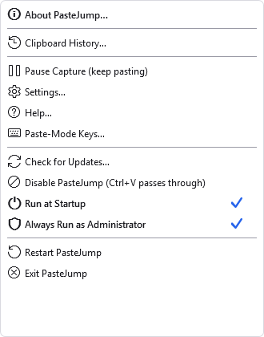
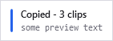

The tray icon
PasteJump has no main window. The notification-area icon is the whole of its user interface when the gesture is not running.
Clicking it
| Left-click | Opens the clipboard history window. This is also what a double-click does, because it is the menu's default item. |
| Right-click | Opens the menu below. |
What a left click does is a setting, under Settings, System — it can open the history, open the menu, open Settings, or do nothing. Right-clicking always opens the menu whatever that is set to, which is the one convention every tray program shares and the way back from any choice made there.
What the colour means
The icon reports the state by colour and by glyph, so it still reads in greyscale and for anyone who would not distinguish the colours:
| Icon | Meaning |
|---|---|
| Blue | Running normally: watching the clipboard, and the gesture works. |
| Amber, with pause bars | Capture is paused. Nothing new is recorded, but the gesture still pastes from the clips already held. |
| Grey | Disabled. The keyboard hook is uninstalled, so
Ctrl+V passes straight through as if PasteJump were not running. |
Pause and Disable are not the same thing. Pause stops recording and is remembered between runs,
because it is a preference. Disable also releases Ctrl+V, and is deliberately
not remembered — a clipboard manager that quietly started up dead weeks later would look broken.
When both apply, the icon shows disabled: it is the stronger condition, and it is the one that explains why
nothing is happening.
The menu

Right-click the icon. The two ticked items are states rather than actions — the tick is read from the machine each time the menu opens, not from a saved preference, so it tells you what is really set up.
| Item | What it does |
|---|---|
| About PasteJump… | Version, build stamp, the credits and the third-party notices. Copy Details there puts the version and environment on the clipboard, which is what to paste into a bug report. |
| Clipboard History… | The history window. The default item, so a double-click on the icon opens it. See The history window. |
| Pause Capture (keep pasting) | Stops recording new clips; the gesture keeps working on the clips already held. Reads Resume Capture while paused, in bold. |
| Settings… | Every option, tab by tab. See Settings. |
| Help… | This manual. |
| Paste-Mode Keys… | A card listing every key that works while the gesture is open. The same list as The gesture, in a window you can leave open while you learn them. |
| Check for Updates… | Asks the website whether a newer release exists. See below. |
| Disable PasteJump (Ctrl+V passes through) | Uninstalls the keyboard hook, so the chord behaves as it would with PasteJump closed. Reads Enable PasteJump while disabled, in bold. |
| Run at Startup | A ticked item, not a command: the tick is the answer to "does this start with Windows". It registers a scheduled task rather than a Startup-folder shortcut. |
| Always Run as Administrator | Also a ticked item, and the tick is the only
thing in the program that answers "am I elevated right now". Turning it on needs the privileges it grants, so
PasteJump relaunches under a UAC prompt once and the elevated copy registers the task — one prompt for
both halves. This is the fix for the case in
Another clipboard manager where Ctrl+V does nothing in
one application. |
| Restart PasteJump | Stops and starts it, keeping elevation if it had it. |
| Exit PasteJump | Closes it. Your clips are on disk and are still there next time. |
A row in bold is a way back from an off state — Resume Capture and Enable PasteJump appear that way, and both are bold when both apply, because a paused-and-disabled PasteJump genuinely has two things to switch back on.
Knowing it has started
PasteJump has no window, so when Windows signs you in there is nothing on screen to say it is there. It announces itself instead, briefly, in the corner:

The version you are running and the chord to paste with. It never takes focus, so it cannot interrupt whatever you happen to be typing as you sign in.
Under Settings, System, Say So When PasteJump Starts offers three answers:
| Every time it starts | The default. Useful if you stop and start PasteJump yourself and want to see that each restart took. |
| Only after an update | Silent from day to day, and says so once after the version changes — which is the one moment the program has genuinely become something else. |
| Never | Say nothing, which is what every release before this one did. |
The notice tells you if PasteJump started paused or disabled, rather than simply claiming to be running. Pausing persists across a restart, so this is the one place that state is easy to miss.
The notification after a copy

The clip count and a preview of what was copied. It never takes focus, and it can be switched off under Settings, Appearance — as can where on the screen it appears.
Checking for updates
Right-click the icon and choose Check for Updates…. PasteJump reads a small version file published on its website and tells you whether the copy you are running is newer, older or the same.
It happens only when you ask. Nothing checks at start-up: a clipboard manager that contacts a server the moment you sign in is doing something you did not request, and it would put a network round trip in front of the tray icon appearing.
When a newer release exists you are offered it. Where the download can be fetched unattended, PasteJump can download and verify the archive for you; otherwise it opens the download page, because replacing a running program is not something it will do behind your back.
Which releases you are offered is a setting, under Settings, System, Update Channel — Stable, Stable (delayed one week), or Developer. The three are described in Settings reference.
Only one copy runs at a time, per signed-in user. Starting PasteJump when it is already running shows a brief notification saying so and points at the notification-area icon, rather than starting a second copy or appearing to do nothing. Two copies would fight over the clipboard and install two keyboard hooks. Another user signed in to the same computer is unaffected: they get their own.